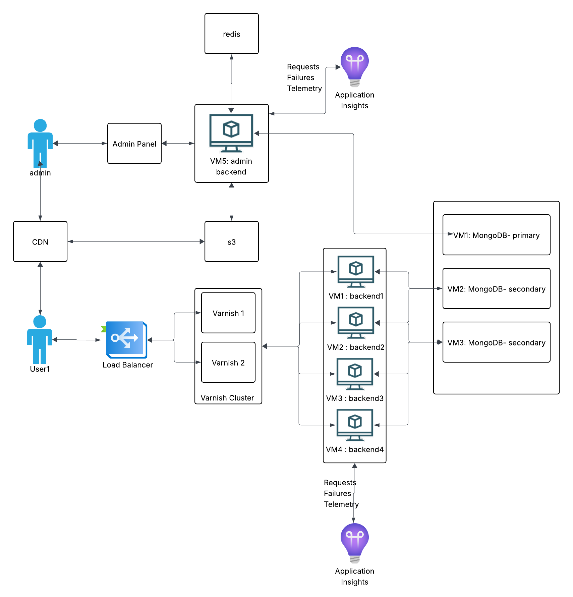

Monolithic News Portal Infrastructure
This project covers the system design for a news website. The requirements are simple: a public-facing site where readers view articles, and an admin panel where editors manage content. To size the infrastructure, I measure RPS during peak hours and multiply by 2-3x to handle unexpected spikes.

Infrastructure Approach: Docker on VMs
The system runs Docker containers on rented VMs. This gives us vertical scaling - when traffic grows, we upgrade CPU and RAM, then downgrade when it normalizes.
Pros: Simpler to set up and manage. No need to learn Kubernetes orchestration.
Cons: Scaling is manual and coarse. You pay for whole VM upgrades even if you only need a bit more capacity. Active DevOps monitoring is required. Kubernetes would give finer cost control, but adds complexity that wasn't justified for this project.
Tech Stack
.NET: Chosen for performance under load. News sites can spike hard when stories break, and .NET handles concurrent requests well. The trade-off is longer development time compared to Node.js or Python.
MVC over SPA: I went with server-rendered MVC instead of a separate React/Angular frontend. I've worked on projects that mixed Angular.js with MVC, and the boundaries got confusing fast - unclear which layer owned what logic. Either commit to full MVC or fully separate your frontend.
Request Flow
Here's how a reader's request travels through the system:
- CDN/WAF - Optional first layer. Services like Cloudflare or Akamai provide DDoS protection before traffic reaches your infrastructure.
- Load Balancer - Distributes requests across backend servers and handles SSL termination.
- Varnish Cache - Serves content from RAM if available. Most requests never hit the backend.
- Backend (.NET) - Only handles cache misses and admin operations.
- Database (MongoDB) - Stores articles, user data, and configurations.
Load Balancer
The domain points to the load balancer's IP. It routes traffic to a backend pool based on health checks that run every few seconds. If a server stops responding, traffic automatically shifts to healthy nodes.
SSL termination happens here, so backend servers don't waste CPU on encryption. The LB handles all HTTPS negotiation.
Sticky sessions warning: If your site has logins, you might think sticky sessions solve the "logged out randomly" problem. They do, but they create a worse problem: if a user's assigned server goes down, they lose their session entirely. Better solution: store sessions in Redis so any server can serve any user.
Varnish Cache
Varnish sits between the load balancer and backends. It caches responses in RAM and serves them directly for subsequent requests. For a news site, 90% cache hit rate is a good target - meaning 90% of requests never touch your backend.
Why this matters: News sites have read-heavy traffic. Thousands of people reading the same article shouldn't each trigger a database query. Caching cuts server costs and improves response times dramatically.
Installation: Install Varnish directly on VMs, not inside Docker. You want maximum RAM performance with no container overhead.
High availability: Run two Varnish servers on separate machines. If one dies, the other keeps serving. Both should connect to all backends (full mesh topology). If each Varnish only knows half the backends, losing one Varnish effectively loses half your backend capacity too.
Grace mode: Critical for news sites. Configure Varnish to serve stale content if backends become unavailable. During an outage, users still see cached articles instead of error pages. This buys time to fix issues without total downtime.
Cache invalidation: When editors update an article, the backend notifies Varnish to purge that specific URL. TTL can be 30 seconds for dynamic content or hours for static pages.
Backend Servers
Docker containers run on VMs, providing consistent environments across development and production. No more "works on my machine" problems.
Capacity planning: Target 40-60% CPU utilization during normal traffic. Never let servers run above 80% baseline. Here's why: if you're at 80% and a traffic spike hits, servers hit 100% and stop responding entirely. Worse, the load balancer redirects that traffic to remaining servers, which then also crash. This cascade can take down your entire system.
Sizing rule: Calculate how many users you can serve at 50% utilization, estimate your peak traffic, then add one extra server as buffer.
MongoDB
MongoDB runs as a replica set: one primary handles writes, secondaries replicate data and can serve reads.
Always use odd numbers: MongoDB nodes vote to elect a primary. With even numbers, you can get split votes. Use 3 nodes (1 primary, 2 secondary) or add an arbiter if you must use even numbers.
Election flapping: A common mistake. Without proper priority settings, minor network hiccups trigger new elections. Nodes keep voting for a new primary, and during elections the database can't accept writes. Your backend starts failing. Fix: assign explicit priorities to nodes so elections only happen when actually needed.
Installation: Like Varnish, install MongoDB directly on VMs for better disk I/O. Each node on a separate machine for fault tolerance.
Redis
Redis handles two things: session storage (so users don't lose logins when load balancer routes them to different servers) and editor coordination (tracking who's editing which article to prevent conflicts).
What This Architecture Does Well
- Fast development: Monolithic structure means all code in one place. Easy to understand and deploy.
- High read performance: Varnish handles most traffic without touching the backend.
- Reliable: Redundancy at each layer (2 Varnish servers, multiple backends, MongoDB replica set).
- Straightforward operations: Standard tools, well-documented patterns, easy to find help when things break.
Where It Breaks Down
The admin side is where problems emerge. A news portal isn't just serving articles - it's ingesting content from 20-30 external sources (news agencies, RSS feeds, social media). Editors monitor incoming content, approve auto-generated articles, or write from scratch.
In a monolith, these workflows run as chains of operations: receive content → process → store → notify editors → publish → purge cache → update sitemap → notify Google. When something fails mid-chain:
- Hard to identify where it failed
- No way to replay failed operations
- One failure can block the entire chain
- Debugging requires tracing through the full monolith
We added CQRS (Command Query Responsibility Segregation) to separate read and write paths. It helped, but didn't fully solve the problem.
Why Microservices Become Necessary
The core issue: monolithic architecture can't isolate failures. When you have 20+ external integrations and complex editorial workflows, you need:
- Independent services: If the Google indexing service fails, article publishing should still work.
- Event-driven communication: Services publish events to a message queue. Other services consume them when ready. Failed events can be retried without blocking anything.
- Granular scaling: Scale only the services under load, not the entire application.
- Isolated deployments: Update one service without risking the whole system.
This monolithic setup works for serving content to readers. But the admin side's complexity - external integrations, workflows, chain reactions - pushes toward microservices with proper event sourcing.
What This Project Shows
I'm not presenting this as a perfect architecture. I'm showing how I evaluate trade-offs: when simplicity wins, when it costs you, and how to recognize when a system has outgrown its architecture. Understanding these inflection points matters more than memorizing technology choices.